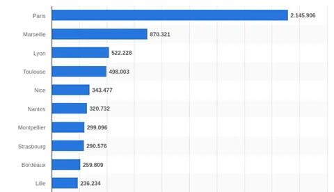
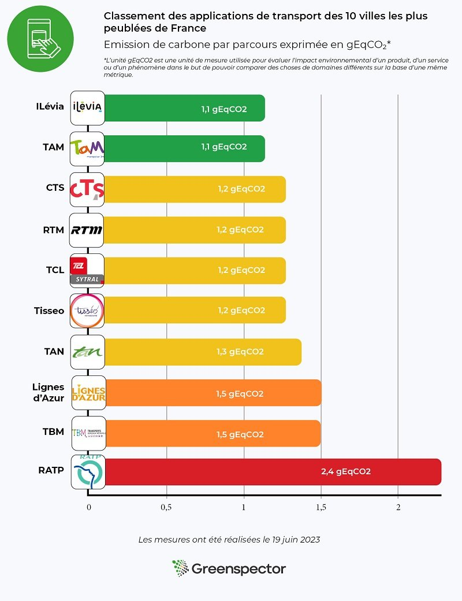
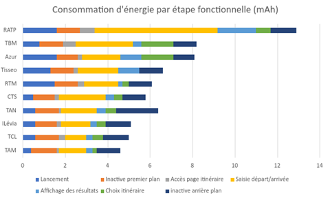
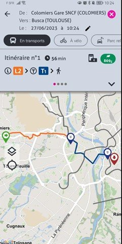
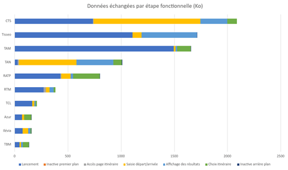
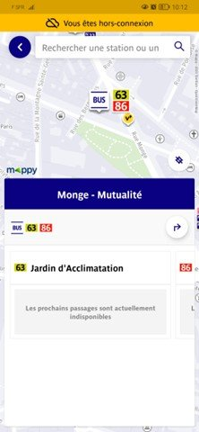

Avec l’émergence des applications de transport en France, la mobilité urbaine a connu une transformation significative au cours des dernières années. En effet, ces applications mobiles font partie des applications les plus téléchargées et les plus utilisées par les Français. Toutes les grandes villes ont une application éditée par les sociétés de transports urbains qui offre des solutions pratiques et flexibles pour se déplacer en ville. Cependant, derrière cette facilité d’utilisation et cette commodité se cache un aspect souvent négligé : l’impact environnemental de ces applications.
Ces sociétés ont compris que le développement des applications mobiles permettait d’offrir des services aux voyageurs (horaires, info-trafic, carte des transports, intermodalités), mais aussi de réduire des coûts par la mise à disposition de service de vente et compostage de billet directement intégrés dans l’application de nos téléphones.
L’objectif de cette étude est de mesurer l’impact environnemental des applications de transport des 10 villes les plus peuplées en France selon le site Statista :
- Bonjour RATP pour la région parisienne
- RTM à Marseille
- TCL à Lyon
- Tisséo pour la ville de Toulouse
- Lignes d’azur à Nice
- TAN à Nantes
- TAM dans la ville de Montpellier
- CTS à Strasbourg
- TBM à Bordeaux
- Ilévia à Lille
Ces applications sont différentes en termes d’interface utilisateur, mais elles permettent toutes de répondre à un ensemble de besoins essentiels de l’utilisateur. Nous avons donc déterminé un parcours utilisateur commun, qui nous permet de comparer ces applications en termes d’impact carbone, de consommation d’énergie et de données échangées. Enfin, dans une deuxième partie, nous analyserons les causes des résultats obtenus.

Méthodologie
Définition du parcours utilisateur
Pour la mesure, nous avons déterminé un scénario commun compatible pour toutes les applications, à savoir la recherche d’un itinéraire d’un point A à un point B (géolocalisation activée) comportant les étapes suivantes.
- Etape 1 : Lancement de l’application
- Etape 2 : Accès à la page de recherche
- Etape 3 : Saisie d’itinéraire
- Etape 4 : Affichage des résultats
- Etape 5 : Sélection d’un itinéraire
- Etape 6 : Mise en arrière-plan de l’application (30 s)
Dans le cadre de cette étude, les données ont été mesurées le 19 juin 2023 à l’aide de Greenspector Studio. Nous avons utilisé le langage GDSL (Greenspector Domain-Specific Language) pour rédiger des scripts de test, qui reproduisent automatiquement les actions à effectuer sur un téléphone. Le module Testrunner nous a ensuite permis de réaliser les mesures sur un smartphone Android : nous avons ainsi obtenu les consommations d’énergie et de ressources (mémoire, CPU, données échangées) et les temps de réponse pour chacune des étapes du parcours. Enfin à partir de ces mesures, le modèle d’impacts intégré à Greenspector Studio évalue l’impact environnemental correspondant.
Hypothèses
Lors de cette évaluation, nous avons pris le parti d’étudier le comportement d’un utilisateur qui utilise régulièrement l’application et recherche donc son itinéraire avec moins de clics possibles.
Contexte de mesure
- Samsung Galaxy S10, Android 10
- Réseau : Wi-Fi
- Luminosité : 50%
- Tests réalisés sur au moins 3 itérations pour fiabiliser les résultats
Hypothèses retenues pour les projections environnementales
- Localisation des utilisateurs : 100% en France
- Localisation des serveurs : 100% en France
- Appareils utilisés : smartphones uniquement
L’empreinte environnementale dépend de la localisation des serveurs de l’application, de leur type, de la localisation des utilisateurs et du type d’appareils qu’ils utilisent. Nous avons étudié l’usage des applications uniquement sur smartphone et sur les utilisateurs présents sur le sol français car leur usage est destiné uniquement à cette part de la population. Faute de meilleure information, les serveurs ont été considérés comme ayant un niveau de complexité moyen.
Résultats
Après avoir effectué une analyse détaillée, nous avons établi un tableau comparatif des résultats, mettant en évidence les applications les plus économes en émissions de GES et celles qui génèrent une empreinte environnementale plus importante.
Les résultats suivants sont exprimés en g de CO2 équivalent par parcours.

L’application la plus sobre
Ilévia de Lille et Tam de Montpellier sont les applications les moins impactantes selon nos résultats. Celles-ci ne consomment qu’un très faible volume d’énergie. Le fait que le parcours mesuré contienne une faible quantité d’images et d’animations explique notamment ce chiffre.
L’application la moins sobre
Bonjour RATP arrive en dernière position du classement sans grande surprise. En effet, l’application est très énergivore. Cette énorme consommation est notamment due à l’intégration des services tiers de géolocalisation et aux nombreux contenus multimédia (photos, icônes…). De plus l’application propose de nombreuses fonctionnalités dès l’écran d’accueil comme le scan des trottinettes.
L’application précharge de nombreux contenus. Même si l’utilisateur est hors connexion, il peut tout de même accéder à la carte interactive pour la recherche de station. C’est un point négatif pour l’application car ce pré chargement n’est pas une étape critique pour la suite du parcours. Il est non pertinent pour l’utilisateur de charger une carte allant au delà des frontières parisiennes.
Projection pour 10 000 utilisateurs réguliers
La plupart des applications comptent entre 100 000 et 500 000 téléchargements sur le Playstore. Prenons pour chaque ville 10 000 utilisateurs réguliers utilisant l’application tous les jours pour faire un trajet aller-retour : cela équivaut à 600 000 visites mensuelles.
[table “71” not found /]Le tableau reprend l’impact carbone d’une visite unitaire en g CO2e et présente la projection d’une utilisation 2 fois par jour à l’échelle de 10 000 utilisateurs en kg CO2e. Enfin la projection est faite sur une durée d’un an avec la même unité.
Pour les applications les moins impactantes telles que TAM ou CTS, une telle utilisation à l’année représente 8,03 tonnes de CO2e. Cela équivaut à plus de 36 903 km en véhicule léger parcourus d’après le site Impact CO2 de l’Ademe.
Pour la RATP, qui est de loin la plus impactante, son impact représente plus du double, soit à l’année 17,5 tonnes de CO2e. Cette valeur équivaut à plus de 80 000 km en véhicule léger.
D’après le Bilan annuel des transports en 2019 du ministère de la transition écologique, une voiture immatriculée en France métropolitaine a roulé en moyenne 12 200 km dans l’année. L’impact d’une application de transport sobre utilisée par 10 000 personnes 2 fois par jour représente les émissions annuelles de plus de 2 véhicules légers tandis que l’impact de la RATP représente les émissions annuelles d’environ 7 véhicules !
Projection sur un an de l’impact
Selon le site de Groupe RATP, l’application Bonjour RATP est visitée par 2,5 millions de visiteurs uniques mensuels et génère plus de 20 millions de visites mensuelles. Si on hypothétise que chaque visite comprend au moins une recherche d’itinéraire, on peut obtenir l’impact carbone mensuel de l’application.
Celui-ci représente 48 t CO2e par mois autrement dit plus de 220 000 km en voiture.
Mais à quoi sont dus ces impacts ?
Dans cette deuxième partie, nous analysons d’où peuvent venir ces valeurs d’impact environnemental. Au travers de la consommation d’énergie ainsi que des données échangées sur le réseau pendant le parcours de l’utilisateur, les applications sont de nouveau classées en fonction de leur consommation énergétique.
[table “72” not found /]
Le graphique ci-dessus met en comparaison les différentes étapes (hormis quelques pauses) mises bout à bout de chaque parcours mesuré en termes d’énergie consommée.
On remarque que les étapes de pauses au premier plan sont en général consommatrices, c’est à dire que l’utilisateur est présent sur l’écran d’accueil de l’application mais sans effectuer une seule action. Cela peut s’expliquer par le fait que le lancement n’est pas assez long pour générer tout le contenu et donc que même en étant inactive après avoir été lancée elle continue de générer du contenu comme les petites icones de station de bus par exemple. Il se peut également que la localisation de l’utilisateur soit recherchée en permanence comme en témoigne l’activité sur l’étape de pause de mise en arrière-plan.
On note aussi que les applications en arrière-plan consomment quasiment la même quantité d’énergie dans toutes les mesures.
L’étape la plus consommatrice est la saisie de départ et d’arrivée de l’itinéraire de l’utilisateur à cause de la recherche et du chargement des itinéraires saisie pour la section. En effet, sur plusieurs applications de transport, il est nécessaire de réaliser plusieurs actions, voire de charger de nouvelles pages pour chaque étape de saisie or sur d’autres applications la saisie est directement accessible depuis la page d’accueil. Par exemple, CTS et Ilévia.
Une disparité de consommation est également observée lors de l’étape de sélection d’itinéraire dans les applications. Certaines applications, telles que Tisseo, proposent directement l’unique itinéraire disponible dans les prochaines minutes.
De plus, la RATP affiche une étape d’accès à la page d’itinéraire beaucoup plus consommatrice que les autres. Certaines applications qui affichent une consommation nulle à cette étape n’ont simplement pas de chargement de nouvelle page car cette fonctionnalité est présente sur la page d’accueil, le parcours de l’utilisateur est optimisé en réduisant les actions réduisant ainsi sa consommation énergétique. C’est le cas de Tisséo qui n’a pas de page de résultats pour afficher les différents trajets. En effet, l’application propose directement le trajet le plus court comme vu sur la capture d’écran ci-dessous.

Une observation notable concerne l’étape de saisie d’itinéraire, où Ratp se distingue par une consommation d’énergie plus élevée, étant 5,8 fois plus énergivore que la TCL. Cette consommation excessive pourrait être attribuée aux trackers et aux services tiers intégrés.
Enfin on note sur l’application Azur de Nice et TBM de Montpelier que son étape d’affichage de l’itinéraire choisi consomme davantage que les autres. Cela peut venir de la carte générée pour cet affichage qui n’est pas compressée ou qui charge au-delà de ce qui est nécessaire c’est à dire au-delà des limites du réseau de transport de la ville.

En ce qui concerne les données échangées, les parcours les moins sobres sont ceux des applications CTS, Tisseo et TAM . La TAM échange 2,4 Mo, soit deux fois plus que la moyenne établie pour toutes les applications. Les bons élèves en termes de données échangées sont Azur, Ilévia, TCL, RTM et TBM qui consomment moins de 0,5 Mo.
Selon Green IT, la taille moyenne d’un e-mail est de 81 Ko. Ainsi, une recherche d’itinéraire en moyenne équivaut à l’échange de 12 e-mails.

D’après notre outil, lors de l’étape de lancement de la plupart des applications, un échange important de données se produit afin de garantir une expérience utilisateur fluide et réactive. Cependant, certaines applications, comme la TAN, ont choisi d’adopter une approche de chargement progressif des données. Cela signifie que seules les informations essentielles sont récupérées initialement, tandis que d’autres données sont chargées au fur et à mesure de l’utilisation de l’application.
Comme évoqué plus tôt, l’application RATP charge beaucoup de contenu à son lancement comme la TAM. On le visualise quand on lance l’application hors connexion, la carte est par exemple déjà chargée avec les stations et arrêts de métro et bus.

Tous ces services tiers sont-ils nécessaires ?
L’intégration des services tiers dépendra des avantages spécifiques qu’ils apportent, de la pertinence pour les utilisateurs finaux et de l’impact global sur les performances et la complexité technique de l’application. Il est recommandé de mener des tests, de surveiller les performances et de solliciter les commentaires des utilisateurs pour évaluer l’efficacité des services tiers et prendre des décisions éclairées.
Bilan
L’étude de l’impact environnemental des applications de transport dans les 10 plus grandes villes de France révèle des résultats contrastés. Certaines applications, telles que RATP, TBM et Azur, ont des parcours moins sobres, consomment plus d’énergie , ce qui peut avoir un impact négatif sur l’environnement. En revanche, des applications telles que Azur, Ilévia et TAM se démarquent en consommant moins de données et d’énergie.
Il est essentiel que les concepteuret les product owners d’applications de transport prennent conscience de l’impact de leurs solutions sur l’environnement et cherchent des moyens de réduire leur empreinte écologique. L’adoption de bonnes pratiques en matière de sobriété numérique, de réduction des émissions de carbone peut contribuer à atténuer l’impact environnemental de ces applications.
Sources